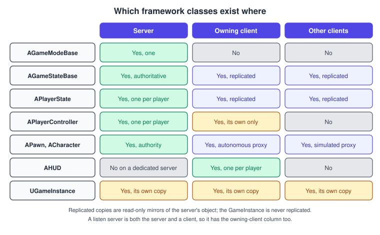
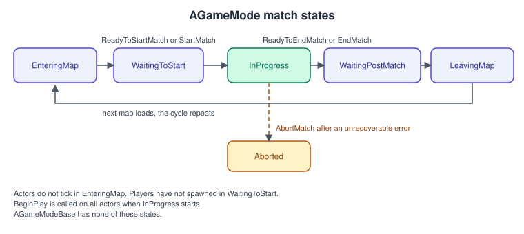
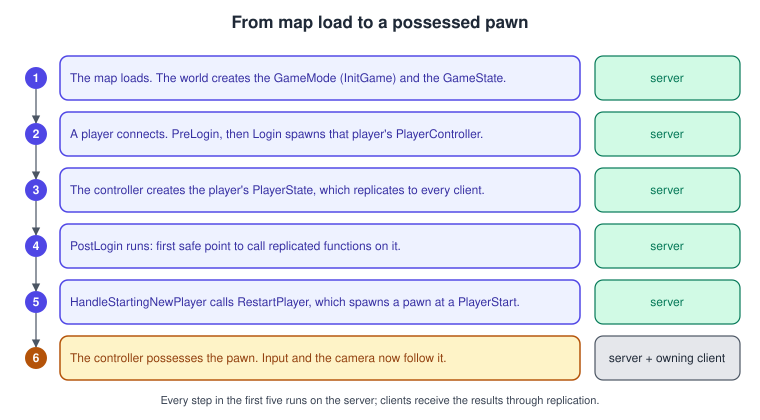
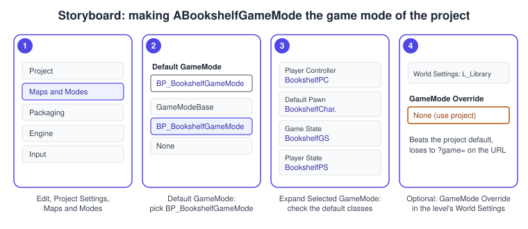

Gameplay Framework
|
This content was generated with the assistance of AI and should be verified against the official documentation before being relied on in production. |
A game is more than actors in a level: someone must decide the rules, spawn the players, remember the score, read the controller, draw the interface and keep the data that must survive a level change. Unreal Engine ships a set of base classes for these jobs, called the gameplay framework. You do not have to use them all, but every template does, networking is built on their split of responsibilities, and almost every Unreal tutorial assumes them. This page explains each class, which machines it exists on, and writes the Bookshelf’s framework classes.
The facts were checked in November 2026 against the Unreal Engine 5.8 documentation (released on 2026-06-17, latest hotfix found 5.8.4). The examples are C++ for the Bookshelf module of the Third Person template, built with Visual Studio 2022 17.14 or newer (VS 2026 recommended) or Xcode, and apply to every platform. They build on
Actors and Components and UObject, Reflection and Garbage Collection.
The Bookshelf framework is ABookshelfGameMode, ABookshelfGameState (the shared score), ABookshelfPlayerState, ABookshelfPlayerController, ABookshelfCharacter and UBookshelfGameInstance; the replication details are on
Networking and Replication, and the input binding in detail is on Enhanced Input.
The classes and who owns what
| Class | Role | Where it exists |
|---|---|---|
Game Mode ( |
The rules and structure of a session: which classes to spawn, how players join, when a match starts and ends. It creates the other framework actors. It is recreated on each level load, so it does not persist across levels. |
The server only. |
Game State ( |
Data about the game that all players need: the list of players, team scores, objectives, the server’s world time. |
Server, replicated to all clients. |
Player State ( |
Data about one player that others may need to see: name, score, ping, per-player statistics. One per player. |
Server, replicated to all clients. |
Player Controller ( |
The link between a human player and the game: it reads input, owns the camera view and the interface, and possesses a pawn. It lasts the whole session while pawns come and go, so data that must survive a respawn belongs here. |
The server has all of them; each client has only its own. |
Pawn ( |
The physical representation of a player or an AI in the world. A character is a pawn for upright figures that walk, run, jump and swim; it adds a skeletal mesh, a capsule and a movement component. |
Server and clients, as replicated actors. |
HUD ( |
The base object for drawing on-screen elements. Each human-controlled player has an instance that draws to that player’s viewport. |
On the client of that player. |
Game Instance ( |
Created when the engine starts and lasts until it shuts down, so it holds data that must survive level loads, and it manages game instance subsystems. |
Each machine has its own, independent instance. It is not replicated. |
The Epic framework overview states the placement of the first three and the last two; the controller and pawn rows follow from how Unreal replicates actors (a controller is replicated only to its owning client, and pawns are actors in the world like any other).

A practical rule follows from this table: the server decides, the clients display. Put rules and authoritative values in the game mode and on the server; put anything a client needs to show into the game state or a player state, which replicate; keep per-client presentation (HUD, camera, widgets) in the controller. A single-player game runs the server and the client in one process, so the same code works, but write it as if it were separate if you may ever want co-op, as the Bookshelf will.
Game Mode and Game State
AGameModeBase and AGameMode
AGameModeBase is the base class of all game modes and the default for new projects. AGameMode derives from it and adds a match state machine suited to multiplayer matches; Epic recommends pairing it with AGameState.
Choose AGameModeBase unless you need the states below: the Bookshelf’s session has no lobby, so it uses the simple base.

| State | Meaning |
|---|---|
|
Initial state. The world is loading and actors are not ticking yet. |
|
Actors tick, but players have not spawned. Moves on when |
|
Normal gameplay. |
|
The match has ended. Actors still tick, but new players cannot join. |
|
Transferring to a new map, then back to |
|
Failure state, set by |
Default classes and how the game mode is chosen
A game mode names the classes of the framework it creates: Default Pawn Class, HUD Class, Player Controller Class, Spectator Class, Game State Class and Player State Class. In C++ these are the members DefaultPawnClass, HUDClass, PlayerControllerClass, SpectatorClass, GameStateClass and PlayerStateClass.
Which game mode a level uses is decided in this order, from the lowest to the highest priority:
-
GlobalDefaultGameModeinDefaultEngine.ini(section/Script/EngineSettings.GameMapsSettings) applies to all maps; the editor writes it from Project Settings > Maps & Modes. -
GameMode Override in the World Settings panel overrides it for one map.
-
The
gameURL option, for example?game=MyGameMode, sets the mode at launch. -
Map name prefixes and aliases (
GameModeMapPrefixesandGameModeClassAliases) apply to maps with a given prefix.
; Config/DefaultEngine.ini
[/Script/EngineSettings.GameMapsSettings]
GameDefaultMap=/Game/Bookshelf/Maps/L_Library.L_Library
GlobalDefaultGameMode=/Game/Bookshelf/Blueprints/BP_BookshelfGameMode.BP_BookshelfGameMode_CThe start-up sequence

The functions you will override most often, in the order they run for a new player:
-
InitGameis called before other scripts and initialises parameters and spawns helper classes. -
PostLoginruns after a successful login. It is the first safe point to call replicated functions on theAPlayerController. -
HandleStartingNewPlayerruns afterPostLoginor seamless travel and, by default, creates a pawn for the player.RestartPlayerstarts the spawning of that pawn;RestartPlayerAtPlayerStartandRestartPlayerAtTransformcontrol where. -
The actual pawn spawn is performed by
SpawnDefaultPawnAtTransform, which you can override to spawn something special.
Game State, Player State and the Bookshelf score
The game mode exists only on the server, so clients can see its class but cannot read its variables. Anything a client must display belongs in the game state, which holds game-wide information (PlayerArray lists all player states, GetServerWorldTimeSeconds() gives a synchronised clock, HasBegunPlay() says whether play has begun),
or in a player state for per-player data.
ABookshelfGameState holds the score of the co-op session. The server changes it; a ReplicatedUsing property sends the new value to every client, which calls OnRep_Score; the HUD binds to a delegate fired from there. In C++, OnRep_ functions run on clients when the value arrives, not on the server, so the server calls it by hand.
// BookshelfGameState.h
#pragma once
#include "CoreMinimal.h"
#include "GameFramework/GameStateBase.h"
#include "BookshelfGameState.generated.h"
DECLARE_DYNAMIC_MULTICAST_DELEGATE_OneParam(FOnScoreChanged, int32, NewScore);
UCLASS()
class BOOKSHELF_API ABookshelfGameState : public AGameStateBase
{
GENERATED_BODY()
public:
/** Server only: adds to the shared score and notifies the local HUD. */
void AddScore(int32 Delta);
UFUNCTION(BlueprintPure, Category = "Bookshelf")
int32 GetScore() const { return Score; }
/** Fired on the server and on every client when the score changes. */
UPROPERTY(BlueprintAssignable, Category = "Bookshelf")
FOnScoreChanged OnScoreChanged;
virtual void GetLifetimeReplicatedProps(TArray<FLifetimeProperty>& OutLifetimeProps) const override;
protected:
UPROPERTY(ReplicatedUsing = OnRep_Score, BlueprintReadOnly, Category = "Bookshelf")
int32 Score = 0;
UFUNCTION()
void OnRep_Score();
};
// BookshelfGameState.cpp
#include "BookshelfGameState.h"
#include "Net/UnrealNetwork.h"
void ABookshelfGameState::AddScore(int32 Delta)
{
if (!HasAuthority())
{
return;
}
Score += Delta;
OnRep_Score(); // clients get it from replication, the server must call it itself
}
void ABookshelfGameState::OnRep_Score()
{
OnScoreChanged.Broadcast(Score);
}
void ABookshelfGameState::GetLifetimeReplicatedProps(TArray<FLifetimeProperty>& OutLifetimeProps) const
{
Super::GetLifetimeReplicatedProps(OutLifetimeProps);
DOREPLIFETIME(ABookshelfGameState, Score);
}ABookshelfPlayerState keeps the one number each player owns, the books they have read. APlayerState already has a player name, a score and a ping; the shared Bookshelf score is team-wide, so it lives in the game state, and the per-player count in a subclass.
// BookshelfPlayerState.h
#pragma once
#include "CoreMinimal.h"
#include "GameFramework/PlayerState.h"
#include "BookshelfPlayerState.generated.h"
UCLASS()
class BOOKSHELF_API ABookshelfPlayerState : public APlayerState
{
GENERATED_BODY()
public:
void AddBooksRead(int32 Count);
UFUNCTION(BlueprintPure, Category = "Bookshelf")
int32 GetBooksRead() const { return BooksRead; }
virtual void GetLifetimeReplicatedProps(TArray<FLifetimeProperty>& OutLifetimeProps) const override;
private:
UPROPERTY(Replicated)
int32 BooksRead = 0;
};
// BookshelfPlayerState.cpp
#include "BookshelfPlayerState.h"
#include "Net/UnrealNetwork.h"
void ABookshelfPlayerState::AddBooksRead(int32 Count)
{
if (HasAuthority())
{
BooksRead += Count;
}
}
void ABookshelfPlayerState::GetLifetimeReplicatedProps(TArray<FLifetimeProperty>& OutLifetimeProps) const
{
Super::GetLifetimeReplicatedProps(OutLifetimeProps);
DOREPLIFETIME(ABookshelfPlayerState, BooksRead);
}The game mode ties it together. Its constructor names the framework classes, PostLogin logs who joined, and AwardPoints is the single server-side entry point for scoring, called by the grab ability and later by the librarian.
// BookshelfGameMode.h
#pragma once
#include "CoreMinimal.h"
#include "GameFramework/GameModeBase.h"
#include "BookshelfGameMode.generated.h"
UCLASS()
class BOOKSHELF_API ABookshelfGameMode : public AGameModeBase
{
GENERATED_BODY()
public:
ABookshelfGameMode();
virtual void PostLogin(APlayerController* NewPlayer) override;
/** Server only. Adds to the shared score and to the scorer's own count. */
UFUNCTION(BlueprintCallable, Category = "Bookshelf")
void AwardPoints(APlayerController* Scorer, int32 Points);
};
// BookshelfGameMode.cpp
#include "BookshelfGameMode.h"
#include "Bookshelf.h"
#include "BookshelfCharacter.h"
#include "BookshelfGameState.h"
#include "BookshelfPlayerController.h"
#include "BookshelfPlayerState.h"
ABookshelfGameMode::ABookshelfGameMode()
{
DefaultPawnClass = ABookshelfCharacter::StaticClass();
PlayerControllerClass = ABookshelfPlayerController::StaticClass();
GameStateClass = ABookshelfGameState::StaticClass();
PlayerStateClass = ABookshelfPlayerState::StaticClass();
}
void ABookshelfGameMode::PostLogin(APlayerController* NewPlayer)
{
Super::PostLogin(NewPlayer);
UE_LOG(LogBookshelf, Log, TEXT("Player joined: %s (%d players)"),
*GetNameSafe(NewPlayer), GetNumPlayers());
}
void ABookshelfGameMode::AwardPoints(APlayerController* Scorer, int32 Points)
{
if (ABookshelfGameState* State = GetGameState<ABookshelfGameState>())
{
State->AddScore(Points);
}
if (Scorer)
{
if (ABookshelfPlayerState* PS = Scorer->GetPlayerState<ABookshelfPlayerState>())
{
PS->AddBooksRead(1);
}
}
}A Blueprint subclass BP_BookshelfGameMode of this class lets designers swap the pawn or HUD without touching C++. That is also the class the editor procedure below makes the project default.
Player Controller, Pawn and Character
A Pawn is the physical presence of a player or AI in the world; a Controller directs it. Each controller controls one pawn at a time. The Epic page notes that pawns spawned during gameplay are not possessed automatically, so either call Possess or set the pawn’s Auto Possess setting. APawn::GetController() returns the possessing controller and AController::GetPawn() the pawn.
Spawned pawns need a controller to receive input; the game mode’s HandleStartingNewPlayer does the possession for human players.
The Epic page on player controllers states the reason for the split: a controller links the pawn to the human player and reflects that player’s intent. In simple games the pawn can read input itself, but when several players share a machine, or a player changes characters, the controller processes input and sends commands such as jump or crouch to the pawn. The controller lasts the whole game while pawns can be temporary: in a deathmatch a respawn creates a new pawn but keeps the controller, so a score stored on the controller survives.
ABookshelfPlayerController adds the Enhanced Input mapping context for its local player and creates the HUD widget. Both are client-only work, so each is guarded by IsLocalController(); without the guard the server would build widgets for every connected player.
// BookshelfPlayerController.h
#pragma once
#include "CoreMinimal.h"
#include "GameFramework/PlayerController.h"
#include "BookshelfPlayerController.generated.h"
class UInputMappingContext;
class UUserWidget;
UCLASS()
class BOOKSHELF_API ABookshelfPlayerController : public APlayerController
{
GENERATED_BODY()
protected:
virtual void BeginPlay() override;
/** IMC_Bookshelf, assigned in the BP_BookshelfPlayerController defaults. */
UPROPERTY(EditAnywhere, Category = "Input")
TObjectPtr<UInputMappingContext> DefaultMappingContext;
/** WBP_BookshelfHUD, derived from UBookshelfHUDWidget. */
UPROPERTY(EditAnywhere, Category = "UI")
TSubclassOf<UUserWidget> HUDWidgetClass;
private:
UPROPERTY(Transient)
TObjectPtr<UUserWidget> HUDWidget;
};
// BookshelfPlayerController.cpp
#include "BookshelfPlayerController.h"
#include "Blueprint/UserWidget.h"
#include "Engine/LocalPlayer.h"
#include "EnhancedInputSubsystems.h"
#include "InputMappingContext.h"
void ABookshelfPlayerController::BeginPlay()
{
Super::BeginPlay();
if (!IsLocalController())
{
return; // on the server this controller belongs to a remote player
}
if (const ULocalPlayer* LocalPlayer = GetLocalPlayer())
{
if (UEnhancedInputLocalPlayerSubsystem* Input =
LocalPlayer->GetSubsystem<UEnhancedInputLocalPlayerSubsystem>())
{
if (DefaultMappingContext)
{
Input->AddMappingContext(DefaultMappingContext, 0);
}
}
}
if (HUDWidgetClass)
{
HUDWidget = CreateWidget<UUserWidget>(this, HUDWidgetClass);
if (HUDWidget)
{
HUDWidget->AddToViewport();
}
}
}Source: Player Controllers
The module’s Build.cs needs EnhancedInput and UMG in its dependency list, as described on Project Structure and Modules.
ACharacter
ACharacter extends APawn with three components, as the Epic page lists: a Mesh (the skeletal mesh component for skeletal animation), a CapsuleComponent (collision for movement; the system assumes a vertically oriented capsule) and a CharacterMovementComponent (moves avatars that do not use rigid-body physics, and only characters can use it).
Designers can tune walking and falling friction, air, water and ground speeds, buoyancy, gravity scale, the forces applied to physics objects, and root motion. The component supports walking, running, jumping, flying, falling and swimming, and the class gives basic networking and input models.
The character’s animation is the subject of Animation Blueprints and State Machines, and its collision of Chaos Physics and Collision.
ABookshelfCharacter keeps the Third Person template’s spring arm and camera and adds one action, Grab, bound to the IA_Grab Input Action. Grab traces from the camera and calls the interface on whatever it hits.
// BookshelfCharacter.h
#pragma once
#include "CoreMinimal.h"
#include "GameFramework/Character.h"
#include "BookshelfCharacter.generated.h"
class UCameraComponent;
class UInputAction;
class USpringArmComponent;
UCLASS()
class BOOKSHELF_API ABookshelfCharacter : public ACharacter
{
GENERATED_BODY()
public:
ABookshelfCharacter();
protected:
virtual void SetupPlayerInputComponent(UInputComponent* PlayerInputComponent) override;
void Grab();
UPROPERTY(VisibleAnywhere, BlueprintReadOnly, Category = "Camera")
TObjectPtr<USpringArmComponent> CameraBoom;
UPROPERTY(VisibleAnywhere, BlueprintReadOnly, Category = "Camera")
TObjectPtr<UCameraComponent> FollowCamera;
/** IA_Grab, assigned in the BP_BookshelfCharacter defaults. */
UPROPERTY(EditAnywhere, Category = "Input")
TObjectPtr<UInputAction> GrabAction;
UPROPERTY(EditAnywhere, Category = "Interaction", meta = (ClampMin = "50.0"))
float GrabDistance = 300.0f;
};
// BookshelfCharacter.cpp
#include "BookshelfCharacter.h"
#include "BookInteractable.h"
#include "Camera/CameraComponent.h"
#include "Components/CapsuleComponent.h"
#include "EnhancedInputComponent.h"
#include "GameFramework/CharacterMovementComponent.h"
#include "GameFramework/SpringArmComponent.h"
ABookshelfCharacter::ABookshelfCharacter()
{
GetCapsuleComponent()->InitCapsuleSize(42.0f, 96.0f);
CameraBoom = CreateDefaultSubobject<USpringArmComponent>(TEXT("CameraBoom"));
CameraBoom->SetupAttachment(RootComponent);
CameraBoom->TargetArmLength = 400.0f;
CameraBoom->bUsePawnControlRotation = true;
FollowCamera = CreateDefaultSubobject<UCameraComponent>(TEXT("FollowCamera"));
FollowCamera->SetupAttachment(CameraBoom, USpringArmComponent::SocketName);
FollowCamera->bUsePawnControlRotation = false;
}
void ABookshelfCharacter::SetupPlayerInputComponent(UInputComponent* PlayerInputComponent)
{
Super::SetupPlayerInputComponent(PlayerInputComponent);
if (UEnhancedInputComponent* Input = Cast<UEnhancedInputComponent>(PlayerInputComponent))
{
Input->BindAction(GrabAction, ETriggerEvent::Started, this, &ABookshelfCharacter::Grab);
}
}
void ABookshelfCharacter::Grab()
{
const FVector Start = FollowCamera->GetComponentLocation();
const FVector End = Start + FollowCamera->GetForwardVector() * (GrabDistance + CameraBoom->TargetArmLength);
FCollisionQueryParams Params(SCENE_QUERY_STAT(BookshelfGrab), false, this);
FHitResult Hit;
if (GetWorld()->LineTraceSingleByChannel(Hit, Start, End, ECC_Visibility, Params))
{
AActor* Target = Hit.GetActor();
if (IsValid(Target) && Target->Implements<UBookInteractable>())
{
IBookInteractable::Execute_Interact(Target, this);
}
}
}Grab runs on the machine that owns the character. In a networked game it would call a Server RPC that repeats the check on the server, which owns the result; that step is on
Networking and Replication.
The HUD
AHUD is the base object for on-screen elements. Each human-controlled player gets one instance that draws to that player’s viewport, and the game mode decides which HUD class is used. The Canvas runs inside the HUD’s render loop and draws text, textures, materials and simple shapes.
Slate is the platform-agnostic UI framework behind the editor and in-game interfaces. For the Bookshelf the HUD is a UMG widget (WBP_BookshelfHUD, derived from UBookshelfHUDWidget) that the controller creates, as above, because widgets are designed visually and bind to the replicated score.
The trade-offs between AHUD canvas drawing, UMG and Slate are on UMG, Slate and CommonUI.
Game Instance and subsystems
The game instance outlives levels, so it is where cross-level data lives in a single-player game. The Epic framework page suggests a save system as the example. It exists independently on the server and on each client and is not replicated, so never use it for state that other players need. You choose the class in Project Settings > Maps & Modes > Game Instance Class.
Putting logic straight into the game instance makes a large class that everything depends on. Epic’s alternative is a subsystem: an automatically instanced class with a managed lifetime that gives programmers an extension point without modifying or overriding engine classes, exposed to Blueprints and Python.
A UGameInstanceSubsystem is created after its game instance, its Initialize() runs when the game instance initialises and its Deinitialize() when it shuts down; after that the reference is dropped and the subsystem can be collected. You reach it with GetSubsystem<T>() on the game instance, and Blueprint search shows typed nodes that need no cast.
Other subsystem types follow the same pattern with other owners: engine subsystems (reached through GEngine), editor subsystems (GEditor), local player subsystems (GetSubsystem<T>() on a ULocalPlayer, which is how the controller above reaches Enhanced Input), and world subsystems that live with one world.
// BookshelfGameInstance.h
#pragma once
#include "CoreMinimal.h"
#include "Engine/GameInstance.h"
#include "BookshelfGameInstance.generated.h"
UCLASS()
class BOOKSHELF_API UBookshelfGameInstance : public UGameInstance
{
GENERATED_BODY()
public:
virtual void Init() override;
virtual void Shutdown() override;
};
// BookshelfSaveSubsystem.h
#pragma once
#include "CoreMinimal.h"
#include "Subsystems/GameInstanceSubsystem.h"
#include "BookshelfSaveSubsystem.generated.h"
/** Remembers the best score across levels. Created automatically with the game instance. */
UCLASS()
class BOOKSHELF_API UBookshelfSaveSubsystem : public UGameInstanceSubsystem
{
GENERATED_BODY()
public:
virtual void Initialize(FSubsystemCollectionBase& Collection) override;
virtual void Deinitialize() override;
UFUNCTION(BlueprintCallable, Category = "Bookshelf")
void RecordScore(int32 Score);
UFUNCTION(BlueprintPure, Category = "Bookshelf")
int32 GetBestScore() const { return BestScore; }
private:
int32 BestScore = 0;
};
// BookshelfGameInstance.cpp
#include "BookshelfGameInstance.h"
#include "Bookshelf.h"
void UBookshelfGameInstance::Init()
{
Super::Init();
UE_LOG(LogBookshelf, Log, TEXT("Game instance initialised"));
}
void UBookshelfGameInstance::Shutdown()
{
UE_LOG(LogBookshelf, Log, TEXT("Game instance shutting down"));
Super::Shutdown();
}
// BookshelfSaveSubsystem.cpp
#include "BookshelfSaveSubsystem.h"
#include "Bookshelf.h"
void UBookshelfSaveSubsystem::Initialize(FSubsystemCollectionBase& Collection)
{
Super::Initialize(Collection);
UE_LOG(LogBookshelf, Log, TEXT("Save subsystem ready"));
}
void UBookshelfSaveSubsystem::Deinitialize()
{
UE_LOG(LogBookshelf, Log, TEXT("Best score this session: %d"), BestScore);
Super::Deinitialize();
}
void UBookshelfSaveSubsystem::RecordScore(int32 Score)
{
BestScore = FMath::Max(BestScore, Score);
}
// Anywhere with a world context, for example from a widget or the game mode:
// if (UBookshelfSaveSubsystem* Save = GetGameInstance()->GetSubsystem<UBookshelfSaveSubsystem>())
// {
// Save->RecordScore(State->GetScore());
// }Where should this data live?
Editor procedure: choose the Bookshelf game mode

-
Create the Blueprint class
BP_BookshelfGameModefromABookshelfGameMode: in the Content Browser, right-click, choose Blueprint Class, pickBookshelfGameModeas the parent and name it. -
Open Edit > Project Settings and select Project > Maps & Modes.
-
In Default Modes, set Default GameMode to
BP_BookshelfGameMode. Expand Selected GameMode to see the Player Controller Class, Default Pawn Class, Game State Class and Player State Class the constructor chose, and change them if needed. -
For a level that needs a different mode, open it, choose Window > World Settings and set GameMode Override. It wins over the project default.
-
Press Play. The Output Log shows the
LogBookshelfline fromPostLogin, which proves the game mode ran.
The Blueprint equivalents
| C++ | Blueprint |
|---|---|
|
The Classes section of a Game Mode Blueprint’s Class Defaults. |
|
Event OnPostLogin in a Game Mode Blueprint. |
|
Get Game State, then Cast To BookshelfGameState. |
|
Possess on a controller; Auto Possess Player in the pawn’s Details. |
|
The interface message node Interact (Message) on any actor reference. |
|
The typed subsystem getter nodes, found by searching for the subsystem’s name. |
Common mistakes
-
Reading the game mode on a client. It is a null pointer there. Put anything a client needs in the game state or a player state.
-
Using the game instance for shared state. Each machine has its own copy; the server’s values never reach clients.
-
Creating widgets without
IsLocalController(). A server then builds interface objects for every player. -
Forgetting to call
OnRep_on the server in C++. The server never receives the notification, so a listen-server host sees stale HUD values. -
Doing server-only work on a client, such as
AddScore. Guard withHasAuthority()and route client requests through aServerRPC. -
Storing per-respawn data on the pawn. The pawn is destroyed on death; keep it on the controller or player state.
-
Expecting the game mode to persist across a level change. It is recreated; use the game instance or a subsystem.
-
Mixing
AGameModeandAGameStateBase, or the reverse.AGameModeexpectsAGameState; a mismatch logs errors and the match functions do not work. -
Spawning a pawn and forgetting to possess it. It stays dormant and receives no input.
-
Hard-coding the game mode in several places. Remember the priority order: the URL option beats the World Settings override, which beats the project setting.
Performance notes
-
The framework classes are few and long lived; their cost is the replication of the game state and player states. Replicate small values, avoid per-frame changes on
AGameStateBase, and letOnRep_functions do the work instead of polling. -
A
PlayerStateexists per player and replicates to everybody, so large per-player data does not belong there. -
Controllers, pawns and the HUD tick; disable the tick of the ones that do not need it (see Actors and Components).
-
Subsystems are created for every game instance, so keep
Initializelight and let them load data lazily. -
The
CharacterMovementComponentis one of the more expensive components of a populated level because of its network smoothing and per-step movement; tune the tick of distant AI characters and see Profiling and Optimization.
What changed recently
| Version | Change |
|---|---|
UE 4.14 (2016) |
|
UE 5.x |
The project templates set up input through the Enhanced Input subsystem of the local player, as |
UE 5.8 (June 2026) |
The release notes list Iris, the replication system, as production ready for licensees. The framework classes and their roles are unchanged; see Networking and Replication. |
Source: Unreal Engine 5.8 Release Notes
Where the books are outdated
The books that cover the framework are Blueprints Visual Scripting for Unreal Engine by Marcos Romero and Brenden Sewell (BPV, UE 4.20 to 4.22, chapters 3 and 11), Unreal Engine 5 Game Development with C++ Scripting by Zhenyu George Li and E. Wyn Roberts (LIR, UE 5.0, chapters 5 and 11) and Unreal Engine 4.X By Example by Benjamin Carnall (CAR, UE 4.10 and 4.11, chapter 5).
| Book | Era | What is current in UE 5.8 |
|---|---|---|
CAR ch. 5 |
UE 4.10 and 4.11 (2016): before |
The book’s game mode is an |
BPV ch. 3 and 11 |
UE 4.20 to 4.22 (2019) |
The roles of the classes are unchanged. The editor panels and the Project Settings layout have moved, so follow the names in the procedure above. Input mappings are now Input Actions and Mapping Contexts. |
LIR ch. 5 and 11 |
UE 5.0 (2022) |
The same class model. It predates the Enhanced Input default, incremental garbage collection and the 5.8 release of Iris as production ready for licensees, so check its networking chapter against the current replication page. |
See also
-
Game Loop and Frame Timing: where framework ticks sit in a frame.
-
Physics, Audio and Input Basics: the engine-neutral input model that controllers implement.
-
Actors and Components: the actor base class of every framework class.
-
UObject, Reflection and Garbage Collection:
UGameInstanceand subsystems areUObjectclasses. -
Enhanced Input: the mapping context and
IA_Grabused above. -
Networking and Replication: roles,
RepNotify, RPCs and relevancy. -
UMG, Slate and CommonUI: the HUD widget.
-
AI, Navigation and Perception:
AAIControllerand the librarian. -
Blueprints Visual Scripting and C++ and Blueprints Together.
-
Project Structure and Modules: module dependencies for
EnhancedInputandUMG. -
Unity scripting and the MonoBehaviour lifecycle: Unity has no built-in equivalent of the game mode and game state split.
-
Multiplayer game architecture: authority and replication theory.